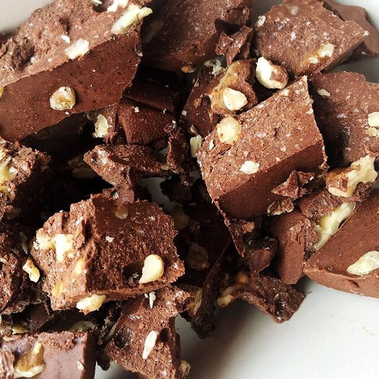
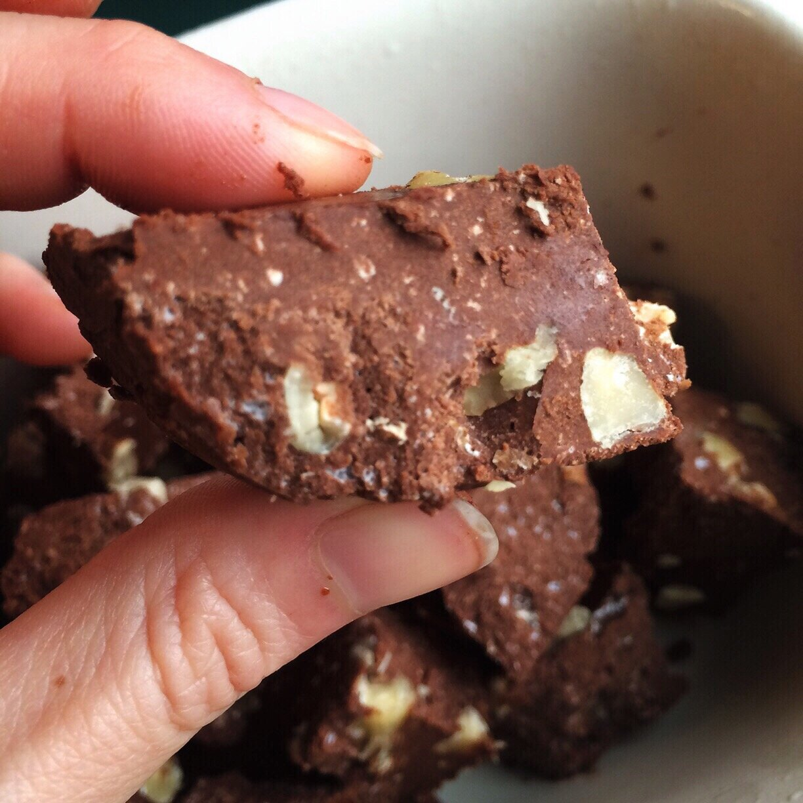

Healthy Salted Walnut Fudge (vegan, gluten free)

healthy salted walnut fudge, walnut fudge, vegan

healthy salted walnut fudge, walnut fudge, vegan
My task for the New Year's Eve fun: bring da sweeeeets. I'm all for that!! So I made some healthy salted walnut fudge Easy, six ingredients, and took all of about 5 minutes to make. It's soo decadent and delicious!! One piece and you get your chocolate fix for sure.
Happy new year ya'll!!!!
2016 goals: fully focus on my happiness consciously every day, manage my anxiety, & wear less pants (although I did awesome at that this year). I'll definitely be posting a "16 things in 2016" list this week (see 2015 and 2014) so be on the lookout for that!! May get interesting since I'm kind of in a place of "I HAVE NO IDEA WHAT'S HAPPENING ANYMORE" soo yeap. What are YOUR goals?? What are you excited about this year??
Try dis fudge. It's always there for you. So are all the old N'sync albums, just sayin - I mean what? No yes I may or may not often resort to nsync dance parties when im bored and alone.
Healthy Salted Walnut Fudge
Makes: 18 servings
-
1/2 cup unsweetened cocoa powder
-
1/2 cup melted coconut oil
-
1/2 cup peanut butter
-
1/2 cup baking stevia
-
1/2 cup chopped walnuts
-
sea salt, to taste
-
Mix all ingredients in a medium bowl.
-
Line a 4x9 dish or a bread loaf pan with saran wrap (for easy removal later), and pour in your fudge batter. Sprinkle more walnuts and salt on top.
-
Freeze 45-60 mins, then cut into 18 fudgey squares.
-
Enjoy! Store any extras in the freezer.